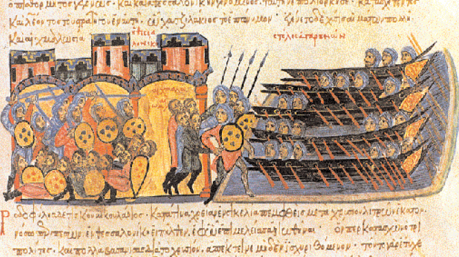

Галера на миниатюрах рукописи Иоанна Скилицы
Иллюстрации из Мадридского манускрипта Иоанна Скилицы крайне важны для рассматриваемой нами истории галеры, поэтому остановимся на них более подробно.

В начале XVIII века в королевскую библиотеку Мадрида поступила рукопись под заголовком «Обозрение истории» (Σύνοψις Ἱστοριῶν), написанная советником византийского императора (1081—1118) Алексея Комнина Иоанном Скилицей (точные даты рождения и смерти неизвестны, предположительно 1040 – после 1101). Хроника охватывала период со смерти Никифора I в 811 году до свержения Михаила VI в 1057 г. Она явилась логическим продолжением летописи Феофана Исповедника. Существует продолжение «Обозрения истории», доведённое до 1079, однако принадлежность его Скилице оспаривается. В настоящее время эта рукопись известна под названиями Madrid Skylitzes, Codex Græcus Matritensis Ioannis Skyllitzes, или Skyllitzes Matritensis.
Относительно датировки Мадридского манускрипта, важной для наших выводов, единого мнения не существует. Дело в том, что не установлено, были ли миниатюры данного манускрипта скопированы с более раннего византийского первоисточника или же они созданы специально для этого экземпляра рукописи. Наиболее обоснованной представляется точка зрения, согласно которой данный список рукописи относится к середине XII века (условно к 1160 году) и имеет южноитальянское (сицилийское?) происхождение. В рукописи имеется 574 миниатюры. Это единственная дошедшая до нас иллюстрированная византийская хроника.
А теперь собственно к интересующему нас вопросу.
Среди более чем полутысячи иллюстраций имеются три, представляющие для нас особое значение. Они впервые со времени изображения либурн на Траянской колонне показывают гребные корабли с двумя рядами весел, причем верхний ряд расположен поверх планширя. (Будем постепенно привыкать к галерной лексике не только во французском, но и в русском языке. Планширь на галерном языке носит название филарет. Вот как определяет его адмирал Шишков в своем словаре: «Филаретъ, имя сущ. муж. — Поручень, идущій вокругъ всей Галеры, лежитъ на стойкахъ, которыя названы Подъ-Филаретными, и утверждены на боковом брусѣ, называемомъ Постица.» Француз Дассье в своей L'architecture navale (t.1, 1695) пишет, что филарет имел квадратное сечение с ребром от 3 (с.123) до 4 (с.118) дюймов.)
Первая из этих трех важных иллюстраций (показана в начале поста) изображает четыре мусульманских галеры во время разграбления Тессалоник в 904 г. Галеры изображены в стиле, подобном генуэзским галерам из Annales Ianuenses. Самая нижняя галера, помимо весел, которыми гребли через порты в бортах, имеет в корме второй ярус из трех весел, которые были расположены поверх филарета. Вторая миниатюра показывает три галеры-биремы с такой же системой гребли, но исполнена она совершенно в другом стиле, который не встречается ни в одной из 49 иллюстраций галер в манускрипте (Рис.ниже).
Третья иллюстрация исполнена в эклектическом стиле, и снова на двух галерахх один ярус весел – через весельные порты, а второй – поверх филарета.
Если принять точку зрения Н. Уилсона (Wilson, N. G., “The Madrid Skylitzes”, Scrittura e civiltа, 2 (1978), с.209-219), что оригинал Константинопольской рукописи Скилицы был доставлен на Сицилию в 1158 г. и что Мадридская копия его была сделана вскоре после этого, то приведенные иллюстрации – самое раннее изображение новой для средневековых западных галер системы гребли. Они предшестуют самой ранней из генуэзских миниатюр, которые хотя и изображали только один ряд весел через порты в борту, однако вероятно относились к той же системе гребли. А именно той, которая позже стала известна как система alla sensile. На каждой банке, расположенной на палубе, находилось по два гребца, которые в процессе гребли не оставались сидеть на своем месте, но вставали для увеличения амплитуды гребка ( система, известная как stay-and-sit stroke ), в отличие от системы гребли на классических и византийских галерах (full seated stroke). Гребец, сидящий на дальнем от борта конце банки, греб веслом через порт в борту, а уключины весла, находящегося у второго гребца, сидящего у борта, размещались на филарете.
Иллюстрации из Мадридского Скилицы крайне важны и представляют собой самые старые изобразительные свидетельства появления системы гребли alla sensile. Они дают значительно более определенную картину этой системы, чем манускрипт Annales Ianuenses и остаются лучшим документом по этому вопросу до появления иллюстрации в манускрипте Петра Эболийского. Но об этом в следующий раз.